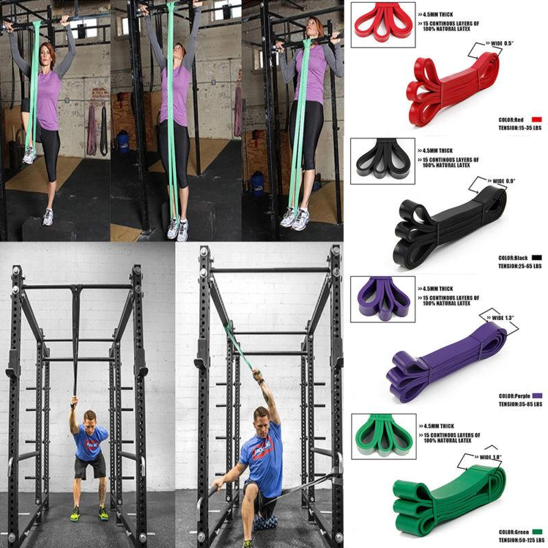
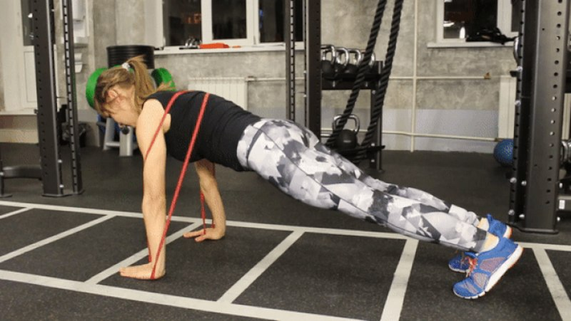
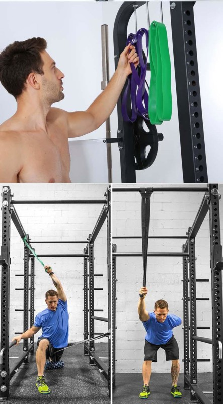

Rubber loop drill
Every year for sports come up with more and more different devices: fitness equipment, fitness tapes, weights, expanders, "iron" and others. Today, rubber loops are increasingly used for training.
Classes with sports equipment, based on the effect of "stretching and squeezing", have not been new. Even in Stalin's times for training athletes used expanders and harnesses, but over time, scientists have developed a more versatile accessory consisting of 100% latex – rubber loops.
What sports are suitable for such training?
A popular accessory is in demand in almost all kinds of sports: bodybuilding, fitness, gymnastics, athletics – not all. Training with rubber loops is a great solution for people who constantly maintain themselves in good physical shape. This equipment is convenient to use in the gym, at home and during training on the street.
